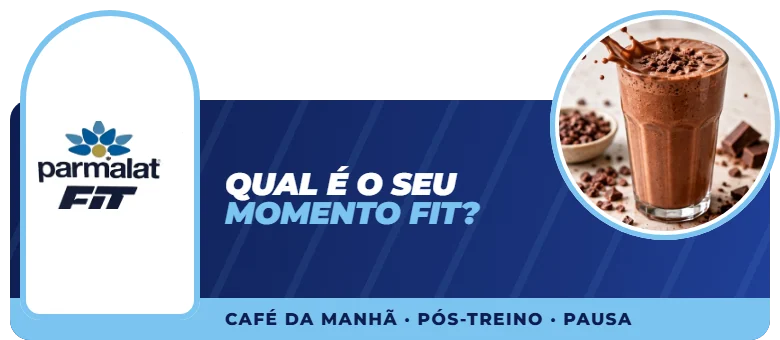
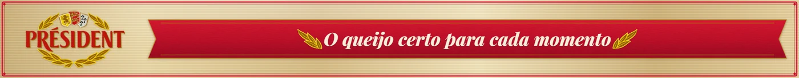
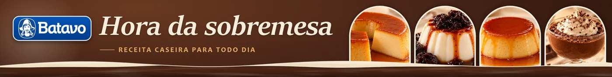
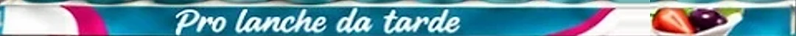
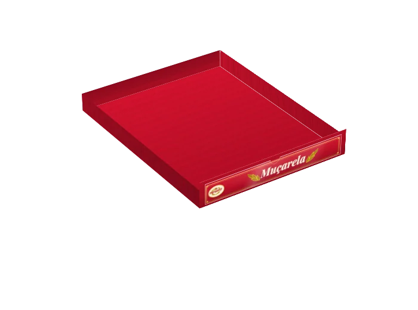

Uma loja-referência em execução de categoria, não uma coleção de cenografias.
6espaços
4marcas
132peças no kit
0móvel novo ou piso
O pedido
Ambientação econômica e premium dos espaços Lactalis que já existem no D'avó Oratório.
O que vimos na loja
Fomos ao D'avó Oratório e fizemos a visita técnica: seis pontos Lactalis num ambiente de alto estímulo, com exposições fragmentadas e dependentes de embalagem e preço.
A necessidade
Transformar áreas dispersas e carregadas em pontos fáceis de escolher, desejáveis e simples de manter.
O objetivo
Aumentar sell-out, presença qualificada e valor percebido do portfólio Lactalis, sem comprometer abastecimento, preço, refrigeração, limpeza ou fluxo.
A estratégia
Organizar cada espaço pela ocasião de consumo e usar a materialidade para valorizar a marca, sem competir com o produto.
A solução
Um sistema único (encontrar, escolher, sustentar) aplicado aos seis espaços, sobre a estrutura que a loja já tem. Há também uma opção upgrade, com materiais novos e luz própria.
O papel de cada marca
Président recebe a maior ambição estética; Pense Zero, a maior disciplina operacional; Parmalat Fit resolve a navegação; Sobremesas constrói desejo.
Próximo passo
Fechar o escopo e medir a loja; depois, prototipar um ponto seco e um refrigerado antes da produção.
Base: pesquisa no local (visita técnica da 75LAB), briefing do cliente, planogramas do D'avó e 75LAB, Planejamento estratégico (23/10/2026).
Contexto / Pesquisa no local
Fomos à loja: seis pontos, quatro marcas, muito estímulo.
Fizemos a visita técnica ao D'avó Oratório e registramos cada ponto Lactalis: fotos, medidas iniciais, estruturas, energia e a comunicação do D'avó. O briefing cita cinco espaços; registramos seis, além da ilha Titanic. O escopo final fecha antes da produção.
Parmalat Fit · três espaçosBatavo Pense ZeroPrésidentBatavo Sobremesas
Placa central sem mensagem e garrafinhas em sacos plásticos.
Metade Fit, metade concorrência; sacos e caixas de estoque à vista.
Cartaz de combo na frente do produto e nenhuma leitura de ocasião.
Cartazes de oferta sobre a frente e nenhuma navegação por ocasião.
Displays de papelão em alturas diferentes e famílias misturadas.
Réguas genéricas, tipos sem ordem e saco plástico no poço.
O que a visita confirmou
10 frentes desejadasPrésident é o hero: 4 de muçarela, 3 de prato e 3 de especiais.
Promotora fixaPense Zero tem abastecimento diário dedicado.
Sem energiaAs duas ilhas Parmalat Fit não têm ponto elétrico.
ConvivênciaPrésident e Sobremesas dividem espaço com testeiras, trilhos e a comunicação do D'avó.
Fonte: pesquisa no local (visita técnica da 75LAB ao D'avó Oratório) e planogramas do D'avó. As fotos ampliam no clique.
Contexto / Marcas e concorrência
Cada marca tem um papel no PDV e enfrenta um ruído diferente.
Parmalat Fit
Rotina ativa, proteína e praticidade.

Linguagem
Clara, dinâmica e funcional. Benefício antes de tecnicismo.
Concorrência e ruído
Integralmédica, Max Titanium, Nutrify, Nutren, Nescau Protein e outros códigos “maromba”.
Espaço de diferenciaçãoOrganizar por momento: pré, durante e pós-treino.
Batavo Pense Zero
Escolha leve, com atributos objetivos de produto.
Linguagem
Direta, fresca e organizada por sabor e formato.
Concorrência e ruído
Iogurtes zero, funcionais e proteicos, com muitos atributos parecidos.
Espaço de diferenciaçãoTornar o “Triplo Zero” instantâneo e fácil de navegar.
Président
Qualidade, especialidade e escolha de queijo.

Linguagem
Premium, sensorial e com curadoria de famílias.
Concorrência e ruído
Polenghi, Tirolez, Aurora, Sadia, Santa Clara e fracionados.
Espaço de diferenciaçãoCuradoria premium: família, gramatura e descoberta.
Batavo Sobremesas
Prazer e repertório de sabores dentro da rotina.

Linguagem
Apetitosa, acolhedora e visualmente ordenada.
Concorrência e ruído
Danette, Chandelle, Nestlé, Vigor e pressão de preço.
Espaço de diferenciaçãoAbrir o apetite e variar a escolha sem poluir.
ImplicaçãoA loja faz o grupo parecer forte pelas boas experiências de marca. Uma identidade “Lactalis” muito visível sobre as marcas diluiria códigos que já têm reconhecimento na categoria.
Fonte: pesquisa no local (visita técnica da 75LAB); sites Lactalis, Parmalat e Batavo (consulta em 23/10/2026). As testeiras são as peças propostas nesta apresentação.
Contexto / Shopper e tensão central
Em poucos segundos, o shopper precisa achar a resposta.
A compra de alimentos acontece sob duas pressões: valor e bem-estar. O shopper busca preço, mas também proteína, zero lactose, conveniência e prazer em casa.
1
Chegada à área
Reconhecer a categoria rápido
BarreiraAmbiente de loja intenso e competitivo
Resposta no PDVTesteira curta e marca legível a distância
2
Comparação
Saber qual produto faz sentido
BarreiraMuitos SKUs, preços e claims
Resposta no PDVNavegação por ocasião ou família
3
Decisão
Escolher com segurança
BarreiraO preço promocional domina a leitura
Resposta no PDVBenefício junto do produto
4
Retirada
Pegar e levar o produto
BarreiraCaixas, reposição e divisórias ruins
Resposta no PDVFrente limpa e exposição estável
Fonte: pesquisa no local (visita técnica da 75LAB) para as barreiras; ABRAS (22/01/2026) e Kantar, “As novas tendências de consumo no Brasil” (24/07/2025), para o contexto de consumo.
Insights
Sete insights, e o que cada um muda no projeto.
01
A categoria já é a mídia.
A ambientação precisa dar ordem à abundância, não competir com ela.
No projetoPeças baixas, dentro do contorno do móvel.
02
O shopper não compra “portfólio Lactalis”.
Compra uma resposta para o momento dele.
No projetoNavegação por ocasião, formato ou família.
03
Pense Zero é o ponto mais seguro de executar.
Tem abastecimento diário dedicado.
No projetoRéguas por ocasião, mantidas pela promotora.
04
Président precisa construir valor antes de explicar variedade.
Qualidade primeiro, navegação depois.
No projetoTesteira de marca e cartões trocáveis por família.
05
Luz só cria valor quando reforça desejo.
Não quando cria risco de manutenção.
No projetoNenhuma luz dentro da área refrigerada.
06
A presença Parmalat Fit está pulverizada.
Sem lógica de categoria, parece dispersão em vez de domínio.
No projetoA mesma linguagem nos três espaços Fit.
07
A versão econômica pode ter alto impacto.
Se investir em hierarquia, blocagem e acabamento.
No projetoAs mesmas réguas, bandejas e cartões nos dois níveis.
Fonte: pesquisa no local (visita técnica da 75LAB); 75LAB, Planejamento estratégico (23/10/2026).
Estratégia / Território recomendado
Escolhas que acompanham seu dia: cada marca responde a um momento da rotina.
Entre os quatro territórios que avaliamos, este é o recomendado: une a loja pela lógica de escolha sem apagar nenhuma marca.
Exposições fragmentadas, dependentes de embalagem e preço.
Para
Pontos de categoria legíveis, desejáveis e fáceis de abastecer.
Através de
Arquitetura de escolha: blocagem, códigos de marca, mensagem de ocasião e acabamento proporcional ao ponto.
Estratégia / Pilares e sistema
Cinco pilares, com a mesma gramática nos seis espaços.
01Encontrar
Faz o ponto ser reconhecido a distância, sem competir com a sinalização da loja.
6testeiras, uma por espaço
02Escolher
Traduz o mix em perguntas reais: “qual produto é para mim agora?”.

27réguas no trilho de preço
03Valorizar
Dá ao Président e às sobremesas desejo e valor percebido, com o produto visível.
Acabamento premium onde a marca pede valor
04Sustentar
Usa materiais que a loja consegue limpar, repor e manter.

70bandejas, bolsos, cartões e nomes trocáveis
05Medir
Estrutura o piloto para aprender antes de escalar.
Sell-out por SKU
Ruptura
Conformidade de planograma
Tempo de reposição
Baseline antes da implantação
Regras de projetoSem móvel novo e sem pisoNenhum topo alto ou lateral volumosaNada na frente de prateleira ou aberturaPreço, ventilação e acesso técnico livresSem luz dentro da área refrigeradaPerto do chão, só marca e imagem
A seguir, os seis espaços na ordem do dia. Em cada um, arraste a foto para comparar o antes e o depois. Fonte: 75LAB, Planejamento estratégico (23/10/2026).
Opção upgrade
Uma 2ª opção: materiais novos e luz própria, nos mesmos seis espaços.
Uma alternativa de investimento maior à ambientação das telas 9 a 14. Cada espaço ganha um conceito próprio, com retroiluminados, LED e neon.
RetroiluminadosA luz fica atrás da face: letreiros, caixa de luz e painéis.
50
Linhas de LEDPerfis e fitas em trilhos, prateleiras, cantos e molduras.
2
Neon flexívelUm traço contínuo de luz, no Pense Zero e nas Sobremesas.
1
Contorno de lâmpadasLâmpadas de LED em volta do frontão das Sobremesas.
14
Revestimentos em ACMEscovado, amadeirado e em cor, por cima do móvel.
12
Bandejas amadeiradasCom frente preta e nome em latão, no Président.
12
Trilhos sem LEDNovos, no Pense Zero e nas Sobremesas.
6
Fontes e cabosUm conjunto por espaço, em baixa tensão.
A validar antes de orçar
Ponto de energia: as ilhas Parmalat Fit não têm hoje, e o da gôndola seca precisa ser confirmado.
Aval técnico do D'avó e do equipamento nos refrigerados, com a luz sempre por fora da área refrigerada.
Onde ficam os cartazes de oferta do D'avó, e os trilhos nos trechos de outras marcas.
Logos e claims com as marcas.
As imagens são ilustrativas, feitas sobre as fotos da visita técnica. Quantidades estimadas; fecham na medição da loja. Os valores dependem do orçamento de produção, instalação e elétrica.
Execução / Critérios técnicos e riscos
Decisões técnicas que protegem o equipamento, o preço e a rotina da loja.
Critérios de projeto
Design
Hierarquia clara: marca, benefício ou ocasião, produto. Nada cobre preço, faceamento ou acesso.
Produção
PS, ACM, PVC, vinil e polionda, com comunicação trocável. Nenhuma estrutura pesada.
Refrigeração
Ventilação e acesso técnico sempre livres. Fixação e adesivo resistem a frio, umidade e limpeza.
Luz
Só em moldura externa, baixa tensão, proteção adequada, acesso para manutenção e aval técnico.
Digital
QR só para receita, combinação de queijo, inspiração ou conteúdo de treino. Sem telas nesta fase.
Decisão de proteçãoNenhuma luz dentro da área refrigerada antes de validação técnica. O ganho estético não compensa o risco de condensação, falha, limpeza difícil ou impacto no equipamento.
Pré-mortem: o que pode dar errado
Risco
Mitigação
Custo inviável
Orçar desde o início uma lista essencial e uma lista premium fechadas.
A peça cobre produto ou preço
Aprovar o mockup frontal e testar a leitura a 2 metros.
A luz falha ou afeta o equipamento
Só instalação aprovada, externa e acessível.
O promotor não mantém o padrão
Guia visual de uma página por ponto.
O mix muda e a peça fica obsoleta
Cartões e nomes trocáveis para mensagens e lançamentos.
O material não aguenta frio e limpeza
Materiais adequados e teste de fixação antes de escalar.
A ambientação vira mais ruído
Mensagem limitada a marca, benefício e navegação.
Fonte: 75LAB, Planejamento estratégico (23/10/2026). Todos os materiais são modulares, removíveis e laváveis.
Execução / Piloto e próximos passos
Um piloto para aprender antes de escalar.
Próximos passos
01
Fechar o escopo
Os espaços que entram e se a ilha Titanic faz parte.
02
Medir e fotografar
Medidas finais na loja e as faces que ainda faltam.
03
Validar com as marcas
Claims Triplo Zero e 21 g, SKUs, famílias, logos e packshots.
04
Prototipar
Um ponto seco e um refrigerado, com teste de leitura e de fixação no frio.
05
Produzir e implantar
Kit por ponto e guia de uma página para a promotora.
06
Medir o resultado
Comparar com o baseline e decidir a escala.
Como vamos medir
Sell-out por SKU
Ticket médio
Giro de lançamentos
Conformidade de planograma
Ruptura
Tempo de reposição
Manutenção das peças
Leituras de QR, quando houver
Sem metas antes do baseline: medimos antes e depois da implantação.
Entregáveis
Essencial
Diagnóstico e mapa de pontos; conceito; criação econômica e premium; fotomontagens; memorial de materiais e fixação; guia de implementação.
Recomendado
Protótipo de um ponto seco e um refrigerado; plano de reposição; checklist de execução; medição antes e depois.
Opcional
QR por ocasião; ilha Titanic; iluminação premium; kit de escala para outras lojas D'avó.